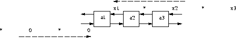

(Thompson 3.12) Define a function to convert small letters to capitals that returns unchanged characters which are not letters.
Thus, write a function to convert all small letters in a string to capitals! Write both a version that uses direct recursion, and a version that uses some appropriate higher-order function on lists (guess which...).
- Using the factorial function fact as a subsidiary.
- Using the recurrence relation
- m over n = (m/n)(m-1 over n-1), for m >= n > 0
- m over 0 = 1, m >= 0
- Using the recurrence relation
- m over n = (m-1 over n) + (m-1 over n-1), for m >= n > 0
- m over m = 1, for m >= 0
- by direct recursion,
- using list comprehensions (not numBorrowed), and
- using higher-order functions on lists.
- e1 :: a
- e2 :: a -> b
- e3 :: a -> a
Write a bignum package for arithmetics on arbitrary-sized integers by representing them as lists of fixed-size integers. (Do not use the built-in Integer data type!) Define a data type for your bignum's and make it an instance of the Num class. For the conversion function fromInteger, you can assume that your fixed-size integers are 32 bits long.
When you have done the above, write a new version of the fact function (p. 138 in Thompson's book) that uses your bignum's. How much new code do you have to write?
x ++ (y ++ z) = (x ++ y) ++ zHint: do not forget the case when some of the arguments are nonterminating!
- foldr (\ x y -> f x + y) 0 xs
- foldr ((+) . f) 0 xs
- Int -> b and a -> Bool
- (Int,a,a) and (a,a,Bool)
(Davie 4.1) Infer the polymorphic types, disregarding class constaints, of the following functions:
last [x] = x
last (x:y:ys) = last (y:zs)
length [] = 0
length (x:xs) = length xs + 1
foldl f z [] = z
foldl f z (x:xs) = foldl f (f z x) xs
sum = foldl (+) 0
Infer the polymorphic type, with class constraints, of the function foo defined below:
foo x:xs y:ys z:zs | y < z = x + foo xs ys zs
| y == z = x + foo xs ys zs
| otherwise = foo xs ys zs
foo _ _ _ = 0
To further your understanding of types, explain why
let f g x = (g x, g [x])
g y = [y]
in f g 'a'
does not type check whereas
let f x = (g x, g [x])
g y = [y]
in f 'a'
does.
Define a polymorphic algebraic data type for binary trees of some type a, where a binary tree either is an element of type a, or a root with two subtrees that are binary trees.
Now define functions over your data type that compute the following:
- The number of leaves in a binary tree.
- The depth of a binary tree.
- A foldtree function that folds a binary tree with respect to a binary function of type a -> a -> a (e.g., sums all elements in a numerical binary tree).
- Finds whether a given element appears in a binary tree.
Using the Haskell modules, define an ADT for multisets. Multisets are like sets, except that each element has a multiplicity, that is: the number of times (possibly zero) it occurs in the multiset. Multisets are often called "bags" which should give some additional intuition. The ADT should support the following operations:
- test for empty multiset,
- creation of singleton multiset,
- multiplicity of given element,
- removal of element (some number of it), and
- sub-multiset relation (you should come up with some reasonable definition, and then implement it).
Provide at least two different implementations of your ADT!
(Davie 7.1) Write programs to generate the following infinite objects (in at least some case(s), use list comprehensions):
- the negative integers,
- the infinite list of powers of two,
- the terms of the series which sums to e**x, viz: 1 + (x/1!) + (x**2/2!) + ...,
- the terms of the partial sums of the previous series, so that the nth term in this new list is the sum of the first n terms of the first list,
Synchronous stream programming is an interesting application of lazy programming, where the synchronous, potentially infinite streams are modelled by lazy lists. Synchronous streams can be used to model hardware on a "functional box" level, where functional units are connected by synchronous channels. Define the following stream operations on lazy lists representing streams:
- A delay operation, which shifts a stream backwards one step in time. In the resulting stream, the first element is then undefined.
- A slowdown operation, which "stretches out" a stream by a factor n such that element i (starting with zero) in the input stream goes to element n*i in the output stream. The other elements in the output stream are undefined.
- A "fixed function" operation, which applies a given "scalar" function to each element in a synchronous stream. (This one is easy!)
Systolic arrays are hardware structures which define (and can be defined by) systems of synchronous streams. An example of an algorithm which has a systolic hardware implementation is n-tap FIR filtering of a time sequence x with coefficients a(1),...,a(n), where an output sequence s is defined by
s(k) = sum(i=1,...,n) a(i)*x(k-i), k > n.
A classical systolic array for FIR filtering is shown below:

Here, the coefficients are stored one per cell. On each time cycle, data is shifted into the cells, a multiply and add is performed in each cell, and results are shifted out. The function of each cell is shown below:

If this array is fed with an input stream from the right, with a slowdown of two and a timing as in the figure above, and if a sequence of ("two-slowdowned") zeroes is fed from the left, then each successive value of the filtered sequence will successively computed by accumulating the terms in the respective sums on its way to the right. (Use a pen and paper to trace a few steps of the computation to convince yourself that this is indeed true.)
Now, the assignment: write a function fir that models a systolic array with the given architecture, which computes the FIR sequence from an input sequence! As arguments it should take a list of n coefficients and an input sequence. Also provide a straightforward Haskell implementation of the FIR function, and validate your systolic solution vs. this "specification" by a number of test runs.
The "do"-notation for monads is really syntactic sugar for the monadic operations >>= and >>. This sugar is (essentially) resolved as follows:
do e1 ; e2 = e1 >> e2
do p <- e1 ; e2 = e1 >>= \p -> e2
Apply this transformation to the example function on p. 393 in Thompson's book (the "important example"). Now explain why the "assignment" of identifiers in the do-notation is not the same as a destructive assignment of a program variable in an imperative language!
(Davie 10.1) Carry out the transformations that reduce the comprehension
[ (n*n-n*m, 2*n*m, n*n+m*m) | n <- [2..100],
m <- [1..n-1],
gcd n m = 1,
odd (m+n)
]
to case-map-filter-form.
(Davie 10.5) Use Burstall-Darlington techniques to transform the following program into a more efficient form:
average x = sum x /length x
sum [] = 0
sum (h:t) = h + sum t
length [] = 0
length (_:t) = 1 + length t
Give an estimate of how much your transformation should improve the running time!